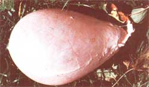
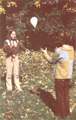

MOTHER feels strongly that youths can be creative "doers', working toward more ecological and self-reliant lifestyles ... whether their tasks be raising chickens on a farm or maintaining rooftop container gardens in the city. To support the endeavors of our often overlooked "underage" citizens, we're glad to publish well-written articles from younger children and teenagers concerning projects they've undertaken. However, we recommend that all young authors query (that is, send us a letter telling about the story you'd like to do) before writing a full article. Address inquiries to Mother's Children, THE Mother Earth News, 105 Stoney Mountain Road, Hendersonville, North Carolina 28791.
On our farm we make our own toys or do without. And last fall, when our parents slaughtered a hog, we turned its bladder into a ball! Now making a toy from a pig's bladder may sound weird to you, but don't forget that real footballs are made from pigskin and baseballs from calfskin. Besides, we've been taught that it's important to never waste anything raised on the farm. And a pig-bladder ball really does make for great fun!
We got the idea from the book Little House in the Big Woods by Laura Ingalls Wilder. Our mother once read us all the books in the "Little House" series by reading a bit of one volume each evening at bedtime. (It took her a year to finish the set!) If you don't know the story, Laura lived with her parents, in the Big Woods of Wisconsin, a long time ago. She always looked forward to pig-butchering time because then she and her sister Mary would get to make a ball from the pig's bladder. They'd also be able to roast and eat the hog's tail. These were great treats for the homestead children, who couldn't buy commercial toys or go to movies.
We've always looked forward to pig-butchering day, too, just for the excitement of all the goings-on (and because we know all that good food will be on our plates come winter). And, since last fall, we've also looked forward to that autumn event for another reason ... because we'll get to play with a pig-bladder ball.
To make one of your own, you'll first need a pig bladder. It's a part of the innards that most people throw away when they butcher an animal. The bladder looks like a pink sack and lies just under the skin of the hog's belly, between its back legs.
When you get the bladder out, it may still have some urine in it, so give it a good washing in the creek. (You could use a garden hose if you don't have a stream, but don't clean the sack in the sink ... your parents probably won't want it in the house.) And remember, there's no reason to feel squeamish about handling and cleaning the bladder. After all, link sausage and old-fashioned hot dogs are cased in pig intestines... and lots of people eat them!
After we washed our first bladder, we cut off the tube leading into it. That was a mistake. The hole made it really hard to get the air into the ball and then close up the top.
We decided to put a drinking straw down into the bladder and held the "balloon" tight around the straw with our hands. Then we blew and blew and blew. The pig bladder grew bigger and bigger and bigger. It was amazing how big that little pink sack got!
Once it was full, we tried to tie the top shut with a rubber band, but that didn't work, so we used string. We tied a simple overhand knot around the bladder and the straw. Then, while one of us bit the straw so the air wouldn't leak, the other started to slowly remove the straw. Just before it was all the way out, we began tightening the string. Then-YANK!-we pulled the straw out and quickly tied the knot. (It took us a few tries before we did it just right.)
That was how we sealed our first pig bladder. We didn't trim the second one, though, so it had a lot more "neck" to hang on to and was much easier to blow up and tie shut.
A pig-bladder ball can be hard or soft, depending on how much air you blow into it. Or you can even fill it up with water and create your own organic water balloon. If you don't put water in it, the sack will dry out and feel as thin as paper, but it's really strong. We throw ours back and forth ... high and low. It's terrific fun.
Besides being a pleasure to play with, you'll find that the ball is lots of fun to make. You can also feel proud that you've done something new and different. And you can feel good because you know your toy has no plastic in it (plastic is made from oil and pollutes the environment). Since our parents taught us that it's important not to waste anything, we think that using a pig bladder-which usually is wasted-is quite an accomplishment.
But you know, we haven't had a chance to roast a hog's tail yet. Maybe that's what we'll do this year!
|
These two resourceful youngsters combined a leftover from hog-slaughtering day with a bit of pioneer lore (learned from Little House in the Big Woods)... to create a toy ball from a pig bladder! |
 |
 |